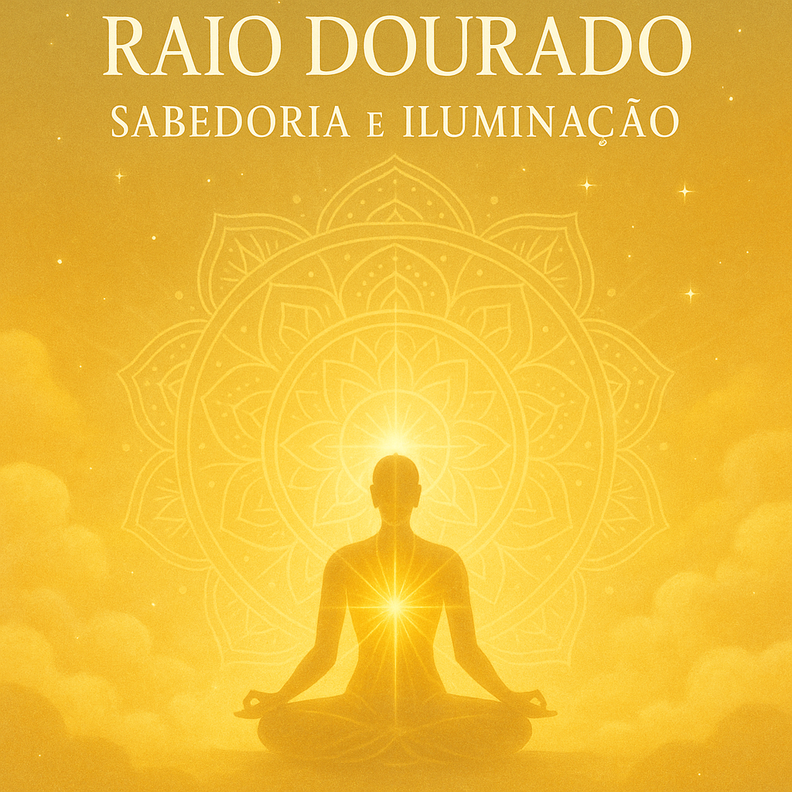

🌟 O que você encontrará neste eBook:
- Ensinamentos profundos sobre a energia do Raio Dourado
- Conexão espiritual com o Mestre Kuthumi e o Arcanjo Jofiel
- Afirmações e práticas de iluminação e clareza mental
- Visualizações e exercícios energéticos com luz dourada
- Ritual do Sol Dourado para acessar insights do Eu Superior